Getting Comfortable with Serverless
March 2020 Presentation
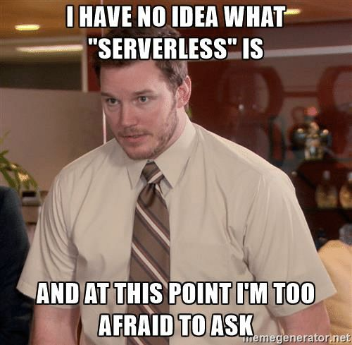If you want to follow along....
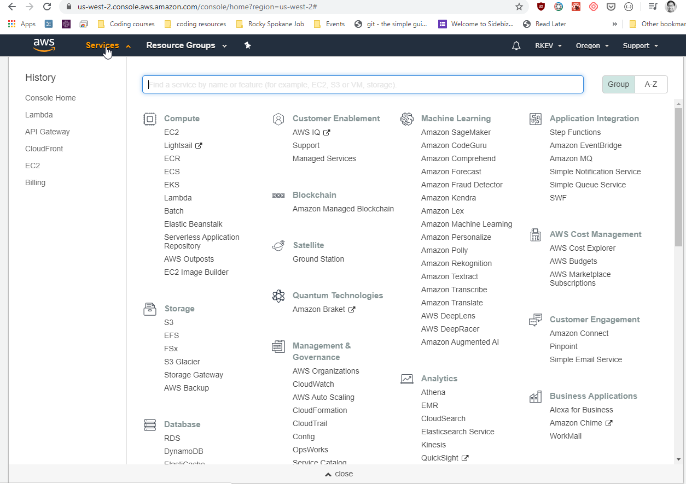Always looking for speakers/vteers
Put this on your tinder profile.

How I present
tl;dr 🍕: What are we covering?
- What is Serverless 🌩️
- Before serverless 😭
- AWS and Lambda λ
- Web development (Github, Netlify, AWS and Heroku)
Serverless computing is a cloud-computing execution model in which the cloud provider runs the server, and dynamically manages the allocation of machine resources. Pricing is based on the actual amount of resources consumed by an application, rather than on pre-purchased units of capacity.
Shamelessly stolen from https://en.wikipedia.org/wiki/Serverless_computing
Normally, you create a server (PHP, Nodejs, Ruby or Python) which interact with a database to fetch information and send it to the Frontend. Then you host this backend server on hosting providers like GoDaddy, AWS or Azure that's running 24 x 7 (even if nobody is using it).
You pay for idle time. You also patch bugs, update software, and scale/manage.
This isn't the half-life symbol.
Actual representation of AWS Lambda.
There's pros and cons.
Backend devs...
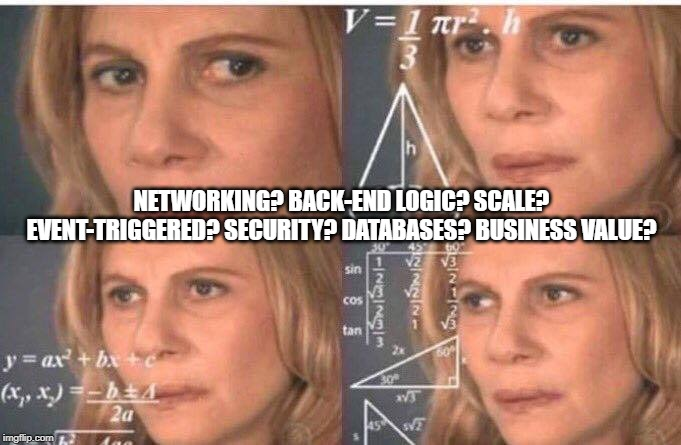 Serverless for Backends read this pros/cons.
Frontend devs...
who wants to focus on deploying websites...
“Focus on your application, not the infrastructure”. ~Faizan Bashir (https://hackernoon.com/what-is-serverless-architecture-what-are-its-pros-and-cons-cc4b804022e9)
So serverless is just an extension of the Cloud. Cloud is just someone elses computer. They are handling all of the hardware configuration and slicing the computer up into different parts so that everyone can use it in their own little piece. Serverless is just taking that to the next level. In the Cloud you dont have to worry about a lot of hardware problems but you still have to worry about all sorts of configuration problems. In Serverless you no don’t have to worry about hardware issues or server configuration stuff. This of course creates its own issues. if you need that level of control over your application then its probably not for what you are doing.
via Adam Martinek

Can you give me some examples? (Explain like I'm 5)
Via Syntax Podcast:
Via Syntax Podcast:
Slack Bot
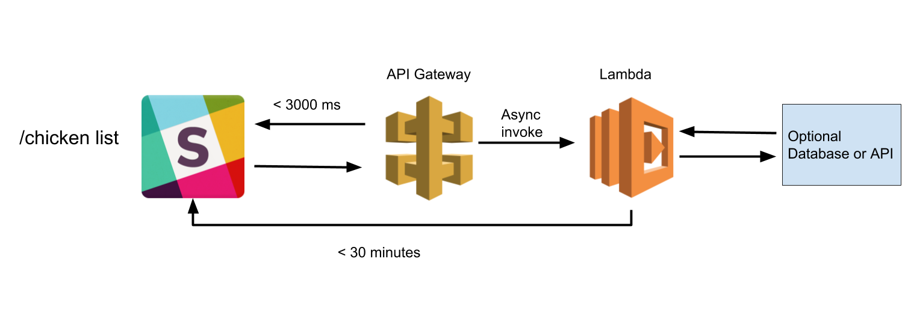
Slack Bot Blueprint
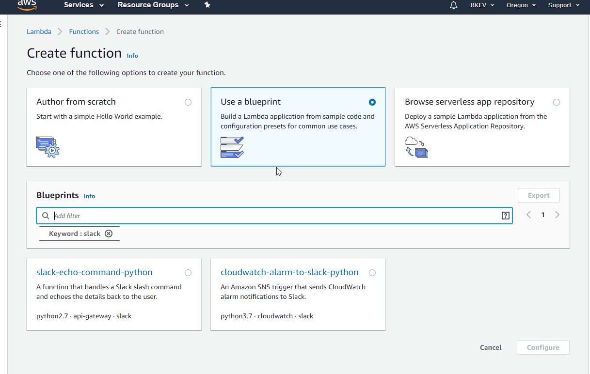
Resize Images link

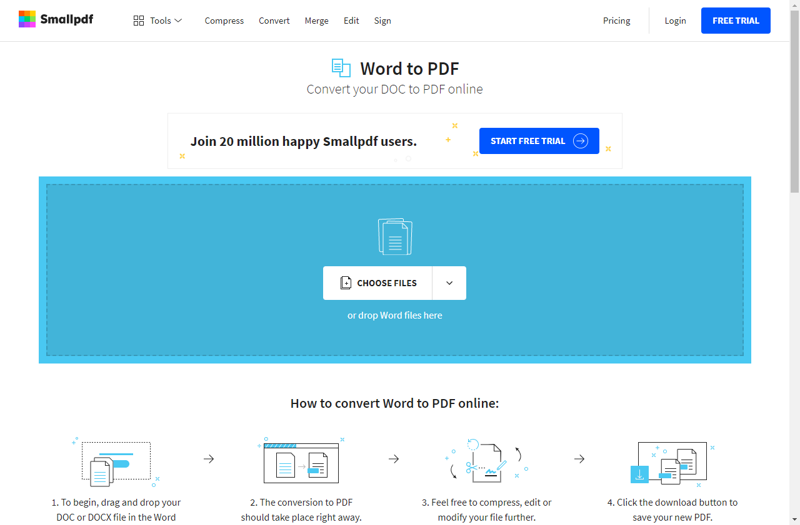
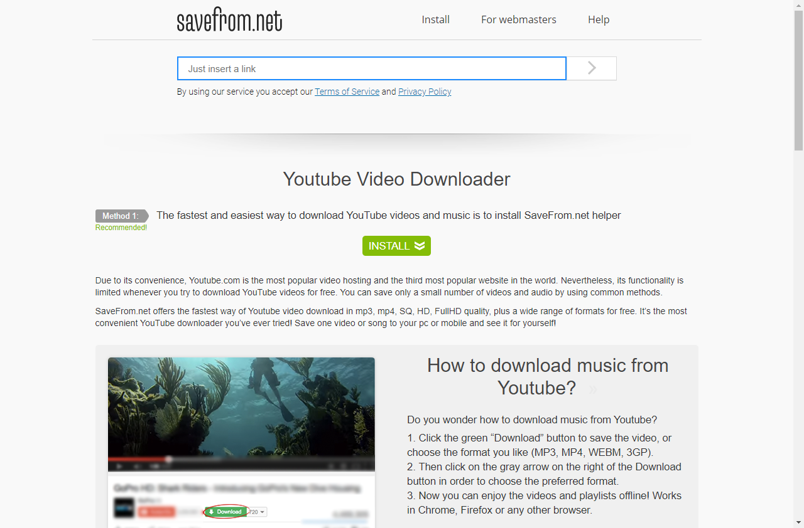
But 🗿🔑 I build websites, not apis.
 Source:
https://www.gocd.org/2017/06/26/serverless-architecture-continuous-delivery/
Source:
https://www.gocd.org/2017/06/26/serverless-architecture-continuous-delivery/
Source:
https://www.gocd.org/2017/06/26/serverless-architecture-continuous-delivery/
Stage 1:
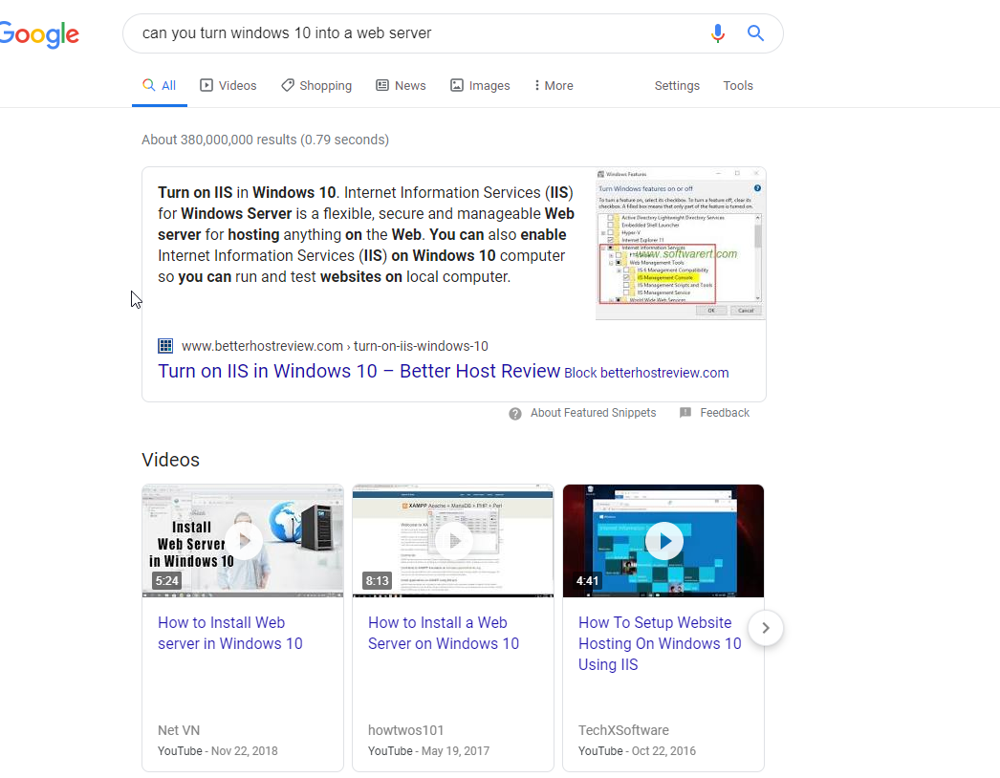
While your computer is a webserver, you try to 🎮 and performance becomes 📉.
Stage 2:
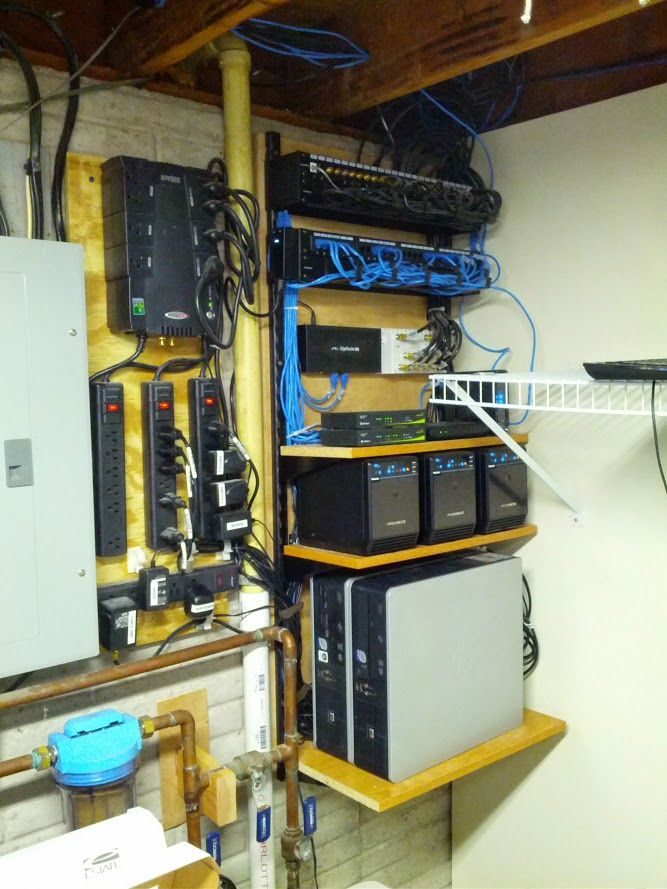
- Time: Who loves updating?
- Hardware: Potential failures. Power outage.
- Security: Not just viruses, but break-ins.
Stage 3:

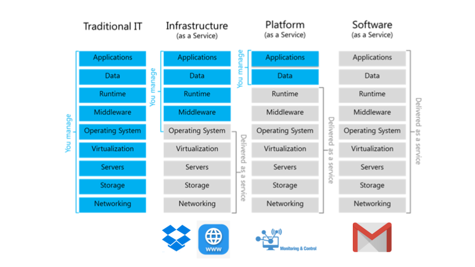
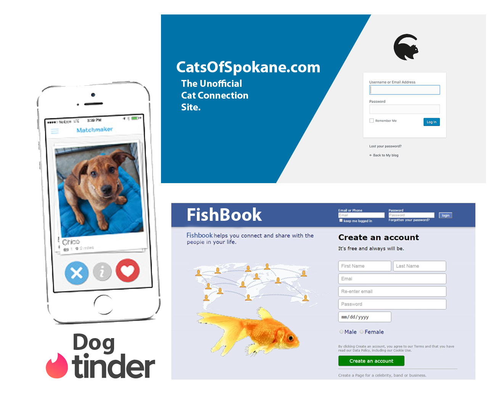
What can Javascript do now?
Integrate with Sharepoint and Google Suite products
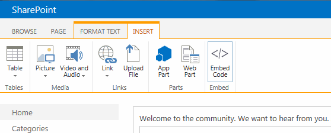 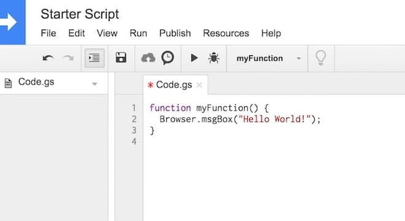QR Codes
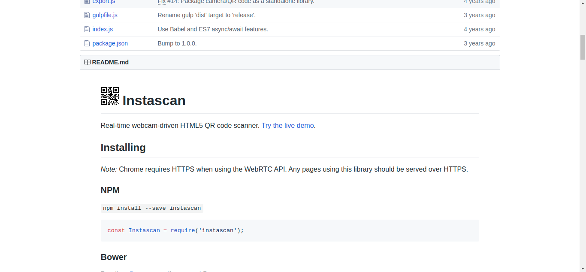Desktop Apps
ElectronJSMachine Learning
clickMachine learning with dick pics
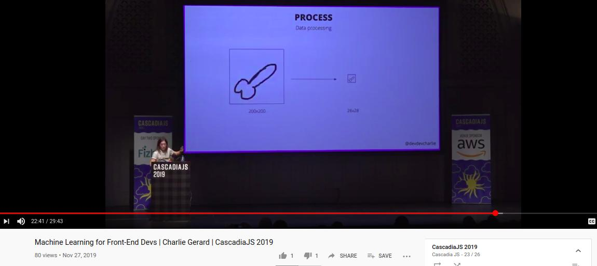
videoGame development

Game development
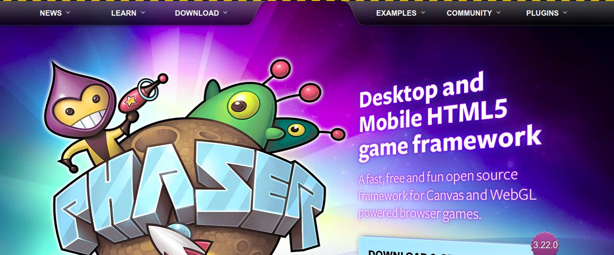3D in the browser
example, docsBlock Chain
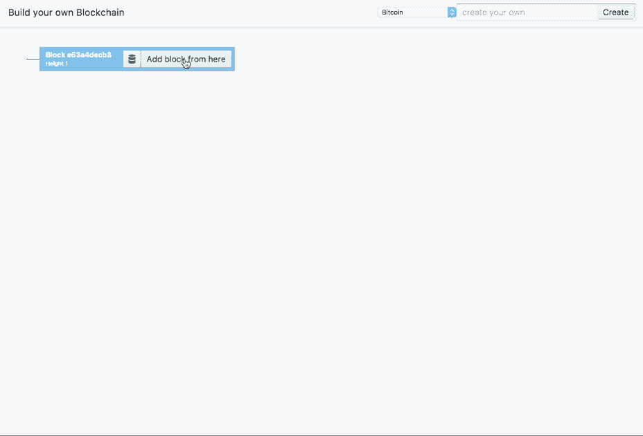 linkMobile Development
listOcculus Rift
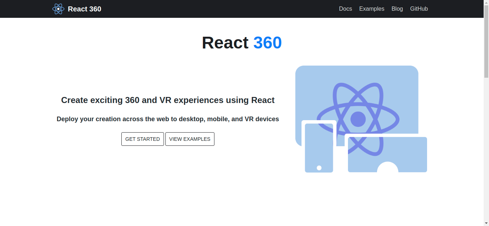Drones
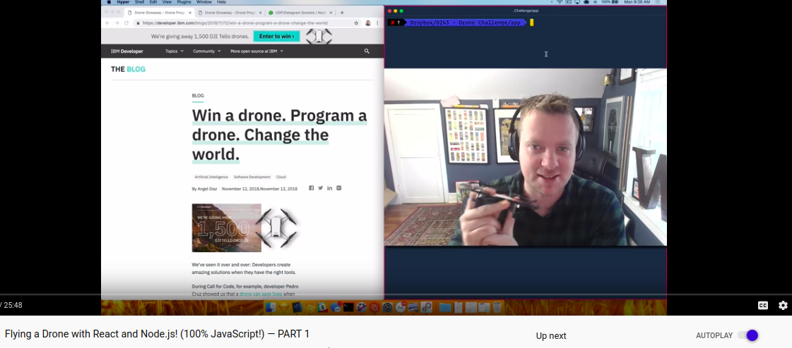Let's not forget...
POPUPS!

The future of JS?
ProposalsVia Richard Feldman
linkLast words:
In the words of Youtuber Fireship:
Always bet on Javascript.